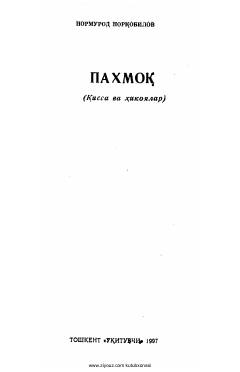

PInson va hayvonot olami o'rtasidagi mehr-oqibat haqida qissa va hikoyalar to'plami.
Ushbu to'plamdan adib Normurod Norqobilovning jonivorlar hayotiga bag'ishlangan qissa va hikoyalari o'rin olgan. Asarlarda insonning tabiat hamda hayvonot olamiga mehr-oqibatli bo'lishi, ularni asrab-avaylash zarurligi g'oyalari aks ettirilgan.